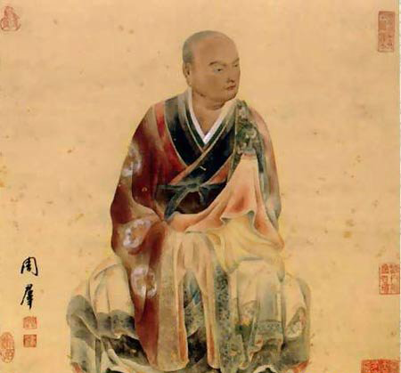

目犍连是佛陀的大弟子，佛陀讲经的时候，他随侍在佛陀的左边。佛陀成道的最初两年中，舍利弗和目犍连就皈依佛陀，从他们皈依佛陀起，目犍连就站在佛陀的左面，舍利弗则站在佛陀的右面。除非他们到别的地方去弘化，否则不会离开佛陀。
目犍连这名字的意思是极大的赞美称诵。他原来信奉别的教派，和舍利弗是非常要好的师兄弟。他曾经与舍利弗互相约定说，哪一日如果谁先成佛，应当互相度化照顾。而当舍利弗皈依佛教后，目犍连照著约定，也带领它的一百多名弟子来皈依佛门。他与舍利弗的加入，使得佛教的声势大增，所以在佛陀所有弟子里头，他们两人备受推崇敬仰，是佛陀座前数一数二的大弟子。
舍利弗随佛陀出家半个月后才断尽诸漏结使，而目犍连只有七天的时间，即断尽结使神足第一的目犍连诸漏，现神通力，证得阿罗汉的神通智波罗蜜。
《阿含经》记载目犍连是‘神足轻拳，飞到十方’，所以他有神足第一的称号。目犍连尊者不但常游诸国，并且也常乘神通到地狱中观察众生受善恶的果报。
佛陀的比丘弟子中，有神通的弟子非常多，而目犍连被推为神通第一，就是因为他在教化中常显神通。目犍连的神通，耳朵听声音，不论远近都能听到；眼睛看东西，不受物体的阻碍都能看到；无论多远的路程，刹那间即至。他更常常显些神通变异，助佛宜扬。佛陀虽不许弟子显异惑众，但对目犍连的神通却常常称许。
目犍连为什么会有神通？关于这点，是他过去生中有著一段微妙的因缘。
目犍连过去生中本是一个以捕鱼为业的渔夫，常在海边捕捉鱼虾出卖，以这样的方法来求财生活，日复一日，终于天良发现，觉得这种求财的方法是大苦业。他觉得一个人今生应作来生的功德，由于这一念向善之心，他就决意改业为生。没有多久，他见到城中有一位辟支佛，每次走在街上，那静止安然的行为，威仪庠序的风度，他见到以后，很是恭敬。因此就把这位辟支佛请到家中供养膳肴。可是这位辟支佛虽然外现威仪，遗憾的是不善于说法，唯有用神通化世，不用其他的法门。这位辟支佛接受供养后就跃身升入空中，或左或右，或前或后，上下自如。目犍连一见，生大欢喜，发愿来生要求得神通。目犍连尊者就因为这样的因缘，今生能皈依佛陀，在佛陀的弟子中被誉为神通第一！
关于目犍连，还有一个有名的典故，那就是‘盂兰盆会’的由来。
由于目犍连尊者有天眼通，他能够知道众鬼的罪业报应因缘，有一天他忽然想起他死去的母亲，他立即运用神通力见到自己的亡母堕在饿鬼道中受苦，咽喉像针缝似的细小，皮骨连结在一起，目犍连见状，孝心油然而生，不禁伤感万分！他即刻用钵盛装了饭菜，藉神通力量往飨老母，但是他母亲取饭尚未入口，饭盒在手中即化为火炭，不能饮食，目犍连悲号涕泣，不能自己。他能知道众鬼的因绿业报，但不知道母亲究竟以什么罪业因缘受著如此苦楚。他带著沉重的心情，赶快前去请示佛陀，目犍连尊者向佛陀禀告道：
‘佛陀！弟子今日以神通力见到我此生的母亲，堕在饿鬼道中受苦，取食成火，不知是何因缘？弟子的神通，能够观察众鬼的罪业因缘，何以对生身之母，竟不知情？恳求佛陀慈悲开示！’
佛陀流露出怜悯的慈光，回答说：
‘目犍连！你的母亲因为在生之时，谤佛谤僧，不信因果正法，贪嗔邪恶，戏弄众生，所以受此苦报。你因母子情深，神通为亲情所掩，所以不知母亲罪业！’
‘佛陀！有什么妙法能使弟子的母亲脱离饿鬼的苦楚呢？’目犍连向佛陀哀求苦。
‘目犍连！你母亲的罪根深结，不是你一个人的力量可以救拔，你的孝心虽然感动大地，但天地神祇对毁谤三宝而堕落的人地无可奈何。你现在唯有仗十方僧众威神之力，方能令你母亲离饿鬼之苦。
‘每年的七月十五日，是十方僧众结夏安居的最后一天，称为僧自恣日，又称佛欢喜日。于此日，做子女的人，应当为七世父母以及现在父母于危难之中者，设百味珍肴饭食，供养十方大德僧众。因为在此日，一切圣众，均具清净成行，其德如汪洋大海，不可思议，如能供养此等僧众，则现世父母及六亲眷属，定能出离三涂之苦，应时解脱。若父母尚健在者，则福乐百年，这就是真正的超荐拔度的妙法！’
目犍连听佛陀说后，欢喜奉行，在僧自恣日供养圣僧大众以后，其母即于是日脱离饿鬼之苦。目犍连知道母亲脱离了饿鬼道中，很感激佛陀，并赞叹三宝功德，奉劝世间应行盂兰盆之法，供佛及僧，以报父母生养抚育慈爱的恩惠。
目犍连虽然号称神通第一，但晚年却死于外道手中。由于目犍连依仗著他上天入地的神通，帮助佛法的宣扬，其功甚伟，正因为如此，才更遭到外道的嫉妒。外道对于佛陀没有办法，他们等待机会要暗杀目犍连。
有一次目犍连在弘法的途中，经过伊私阇梨山下，被当时的外道看到了，他们就从山上推下乱石击杀目犍连，乱石像雨点一般的落下，结果目犍连身受重伤，仍然挣扎著回到舍利弗的住处。舍利弗问他为何不逃走避开，目犍连回答：
‘这是我前世的业报太重，应当受到这种痛苦，我想在临死之前来向你诀别。’
舍利弗说：‘不，我们就一起殉道吧！’
于是，二人到佛陀那里向佛陀和师兄弟告别，又分别回到家乡为他们的亲朋好友和邻居们解说佛法，然后一起入涅槃。
目犍连尊者被外道暗害的消息传到阿阇世王耳中，震怒非常，下令逮捕凶手，数千的裸形外道，在阿阇世王的盛怒之下，都被投进火坑！
外道被阿阇世王处死，消除不了比丘们对目犍连殉教的悲哀，大家唉声叹气，他们都感到世间上的事太不公平，以目犍连那么大的神通威力，为什么不能避免外道的袭击？
佛陀用安慰鼓励的口气对大家说道：
‘诸比丘！目犍连殉教的时候，并不是他不能预防，他有大神通力，可以保卫自己不死，但这不是究竟的办法。修行人也不可违背因果法则，目犍连在过去生中捕鱼，杀生的业要了结。而且，目犍连早就发愿要把他的生命献给真理，现在满了他的愿望，他很欢喜入灭，如果我的弟子都能有目犍连牺牲殉教的精神，佛法就能更加发扬光大，诸比丘！你们应该效法目犍连尊者！’
佛陀开示的法语，比丘和比丘尼们听了非常感动，一个目犍连的色身死亡，将有无数的目犍连为了宣扬佛陀的真理，为了圣教的流传，自愿而欢喜的踏著殉教者的足迹向前迈进！